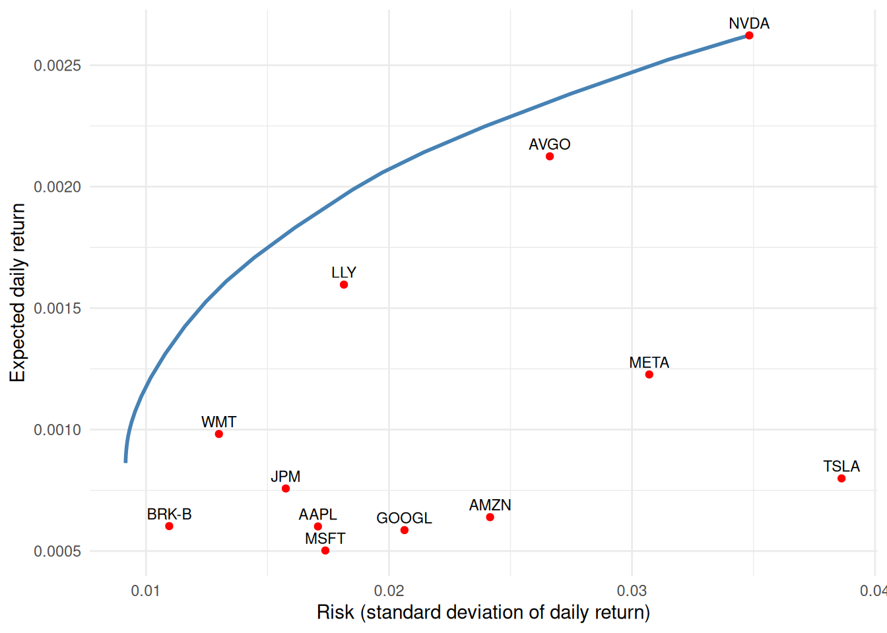
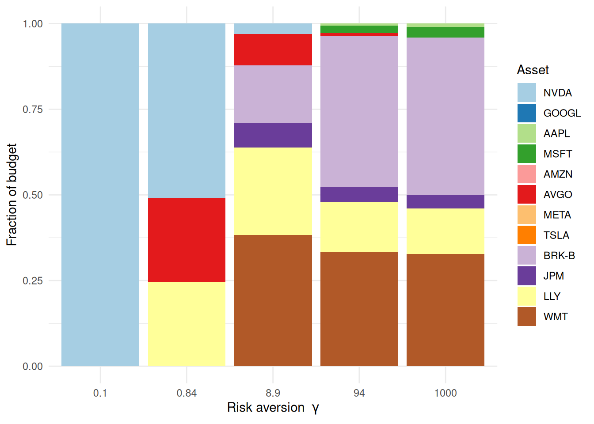
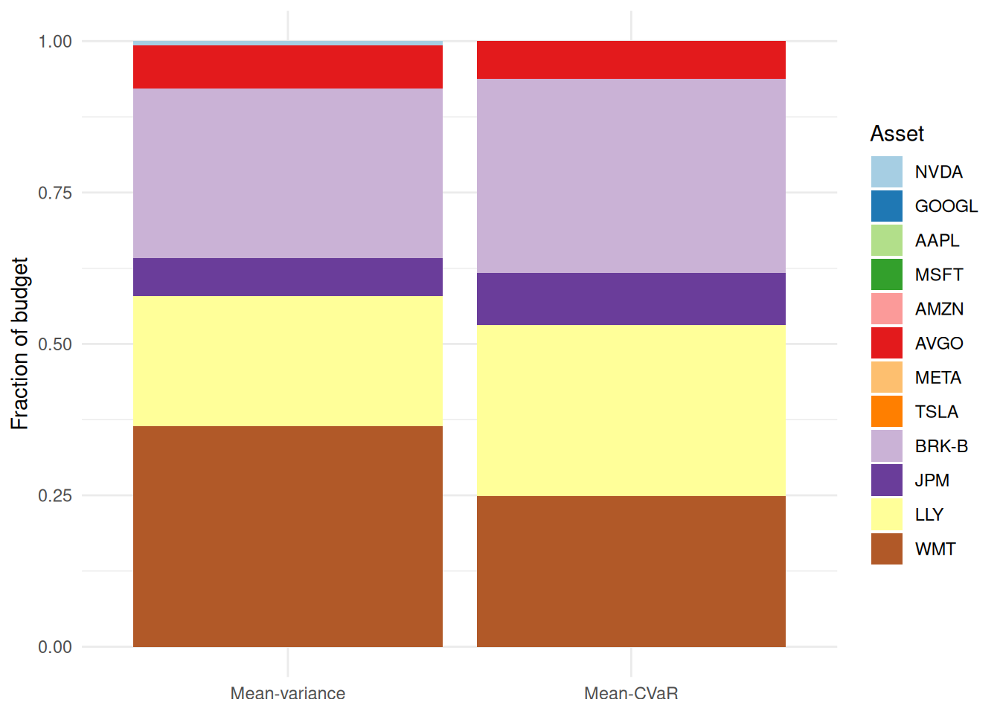

Build a mean-variance (Markowitz) portfolio, trace its risk-return efficient frontier, and re-cast the problem with a different risk measure — Conditional Value-at-Risk (CVaR) — all from real return data.
TipData and models
The models are classics: mean-variance optimization is due to Markowitz (1952) and the CVaR reformulation to Rockafellar and Uryasev (2000). The bundled price data are daily adjusted closing prices for the 12 largest U.S. companies by market capitalization (source: Yahoo Finance, 2022–2024).
9.1 The mean-variance problem
We hold \(n\) assets; \(w_i\) is the fraction of our budget in asset \(i\). Returns \(r\) have mean \(\mu\) and covariance \(\Sigma\), so a portfolio \(w\) has expected return \(\mu^\top w\) and variance (risk) \(w^\top\Sigma w\). Markowitz’s insight: trade return against risk with a risk-aversion knob \(\gamma \ge 0\),
\[
\underset{w}{\mbox{maximize}}\ \ \mu^\top w - \gamma\, w^\top\Sigma w
\qquad\text{subject to}\qquad w \ge 0,\ \ \sum_i w_i = 1.
\]
The constraints make it a long-only, fully-invested portfolio. Small \(\gamma\) chases return; large \(\gamma\) avoids risk.
9.2 Real data
We use ~3 years (2022–2024) of daily adjusted prices for the 12 largest U.S. companies by market capitalization, and turn prices into simple returns, a mean vector, and a covariance matrix:
For each \(\gamma\) we solve the Markowitz problem and record the realized risk and return. This is the same problem re-solved over a grid — exactly where the Parameter trick from Chapter 8 pays off. We make \(\gamma\) a Parameter, build the problem once, and each iteration just sets value(gamma) and re-solves, reusing the cached compilation instead of canonicalizing from scratch 40 times.
w <-Variable(n)ret <-t(mu) %*% wrisk <-quad_form(w, Sigma) # w' Sigma w, a convex quadraticcons <-list(w >=0, sum(w) ==1)gamma <-Parameter(nonneg =TRUE) # the risk-aversion knob, set per solveprob <-Problem(Maximize(ret - gamma * risk), cons) # built oncegammas <-10^seq(-1, 3, length.out =40)fr <-sapply(gammas, function(g) {value(gamma) <- g # swap in the new gamma; no rebuildpsolve(prob)c(risk =sqrt(value(risk)), ret =value(ret), w =value(w))})
Note how we read the risk and return back by directly evaluating the expressions sqrt(risk) and ret after each solve — no bookkeeping required. The frontier:
df <-data.frame(risk = fr["risk", ], ret = fr["ret", ])ind <-data.frame(risk =sqrt(diag(Sigma)), ret = mu, asset =names(mu))ggplot(df, aes(risk, ret)) +geom_line(color ="steelblue", linewidth =1) +geom_point(data = ind, color ="red") +geom_text(data = ind, aes(label = asset), size =3, vjust =-0.6,check_overlap =TRUE) +labs(x ="Risk (standard deviation of daily return)", y ="Expected daily return") +theme_minimal()

Efficient frontier. Red points are single-asset portfolios; the curve dominates them.
Every point on the blue curve is the best return achievable at that level of risk; the individual stocks (red) all sit below it — diversification at work.
The frontier shows the risk-return outcome, but not what the portfolio holds. Since fr already captured the weight vector at every \(\gamma\), we can read the composition straight back out and watch diversification happen. At a few points along the grid we stack each asset’s share of the budget:
markers <-c(1, 10, 20, 30, 40)wmat <- fr[grep("^w", rownames(fr)), markers] # 12 assets x 5 values of gammarownames(wmat) <-names(mu)comp <-data.frame(gamma =factor(rep(signif(gammas[markers], 2), each = n),levels =signif(gammas[markers], 2)),asset =factor(rep(names(mu), times =length(markers)), levels =names(mu)),weight =as.vector(wmat))ggplot(comp, aes(gamma, weight, fill = asset)) +geom_col() +scale_fill_manual(values =brewer.pal(n, "Paired")) +labs(x =expression("Risk aversion "* gamma),y ="Fraction of budget", fill ="Asset") +theme_minimal()

Portfolio composition along the frontier. Small gamma concentrates the budget in a few assets; large gamma spreads it out — diversification, made visible.
The left-most bar (greedy, low \(\gamma\)) leans on one or two names; as \(\gamma\) grows the weight spreads across a broader, more defensive set of names. That shift is the efficient frontier, seen from the portfolio’s side.
9.4 A different risk measure: CVaR
Variance penalizes upside and downside alike. Conditional Value-at-Risk (CVaR) focuses on the bad tail: \(\text{CVaR}_\alpha\) is (roughly) the average loss in the worst \(1-\alpha\) fraction of scenarios. Rockafellar and Uryasev showed it has a beautifully simple convex (in fact linear) form using the historical return scenarios \(r_t\) directly. With losses \(L_t = -r_t^\top w\),
Same data, same CVXR machinery, a different notion of risk — and a different, typically more tail-aware, allocation. Switching risk measures is, once again, just a change to the objective.
To see how the allocation differs, hold the return target fixed and put the two side by side. The fair mean-variance counterpart minimizes variance subject to the same return floor, so both bars sit at the same expected return and only the risk measure changes:
## mean-variance allocation at the SAME return target, for an apples-to-apples comparisonwv_mv <-Variable(n)prob_mv <-Problem(Minimize(quad_form(wv_mv, Sigma)),list(sum(wv_mv) ==1, wv_mv >=0, t(mu) %*% wv_mv >= target))psolve(prob_mv)
[1] 9.208972e-05
check_solver_status(prob_mv)comp2 <-data.frame(measure =factor(rep(c("Mean-variance", "Mean-CVaR"), each = n),levels =c("Mean-variance", "Mean-CVaR")),asset =factor(rep(names(mu), 2), levels =names(mu)),weight =c(value(wv_mv), value(wv)))ggplot(comp2, aes(measure, weight, fill = asset)) +geom_col() +scale_fill_manual(values =brewer.pal(n, "Paired")) +labs(x =NULL, y ="Fraction of budget", fill ="Asset") +theme_minimal()

Same return target, two risk measures. Variance and CVaR reallocate the budget differently.
Both portfolios earn the same expected return, yet CVaR — caring only about the bad tail — tilts the budget toward a different mix than variance, which penalizes upside and downside alike.
9.5 Exercise
Exercise (⭐). Add a diversification rule to the mean-variance problem: no single asset may exceed 25% of the budget. Re-solve at \(\gamma = 10\) and compare with the unconstrained allocation.
TipSolution
A position cap is one linear constraint, w <= 0.25:
The cap spreads weight off the assets that the unconstrained solution concentrated in — a one-line way to encode an investment policy.
9.6 Takeaways
Mean-variance optimization is a convex quadratic program; sweeping the risk-aversion \(\gamma\) traces the efficient frontier (a Parameter sweep, Chapter 8).
Read risk and return straight off the solved expressions with value().
Swapping variance for CVaR is just a new objective — CVXR makes alternative risk measures, position limits, and policy constraints one-liners.